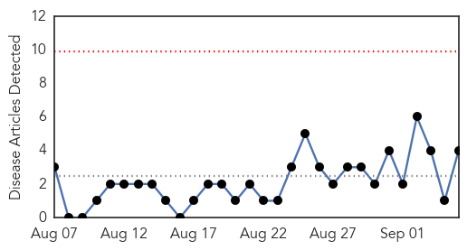
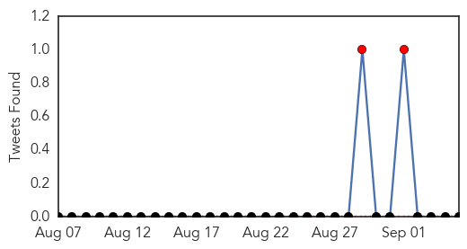
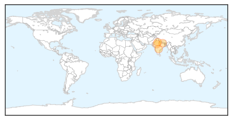

Swine Flu
30-Day Web Trend
0 alerts, 0 warnings

30-Day Twitter Trend
1 alerts, 0 warnings

Article Locations
Article Confidences

Top Articles:
Top Tweets:
-
No tweets found for Sep 05, 2015
Influenza
30-Day Web Trend
0 alerts, 0 warnings

30-Day Twitter Trend
4 alerts, 0 warnings

Article Locations

Article Confidences

Top Articles:
- 0.766
- Kiwi horses blamed for equine flu outbreak in Malaysia
- 0.757
- Agric Ministry & NADMO team up to prevent outbreak of bird flu in 3 northern regions
- 0.751
- September 5, 2015 Archives
- 0.751
- September 4, 2015 Archives
- 0.751
- September 4, 2015 Archives
- 0.683
- Make vaccine free to prevent this horrific disease
- 0.682
- Be vigilant, take action to keep infectious diseases under control
- 0.678
- Veterinary Services Department prohibits horse transfer after Equine Influenza outbreak
- 0.650
- Georgia poultry safe to eat, but eggs, turkeys to cost more
- 0.633
- Veterinary dept prohibits horse transfers after flu outbreak - Nation
- 0.583
- Horse races this month cancelled due to EI outbreak
- 0.532
- 720,000 eggs imported from Iran set ablaze in Farah
Top Tweets:
-
No tweets found for Sep 05, 2015